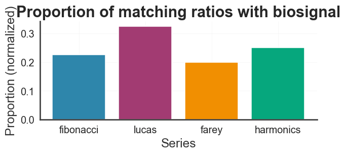
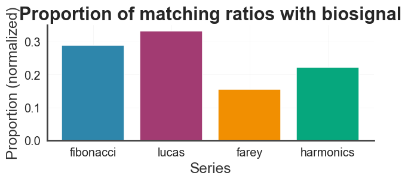
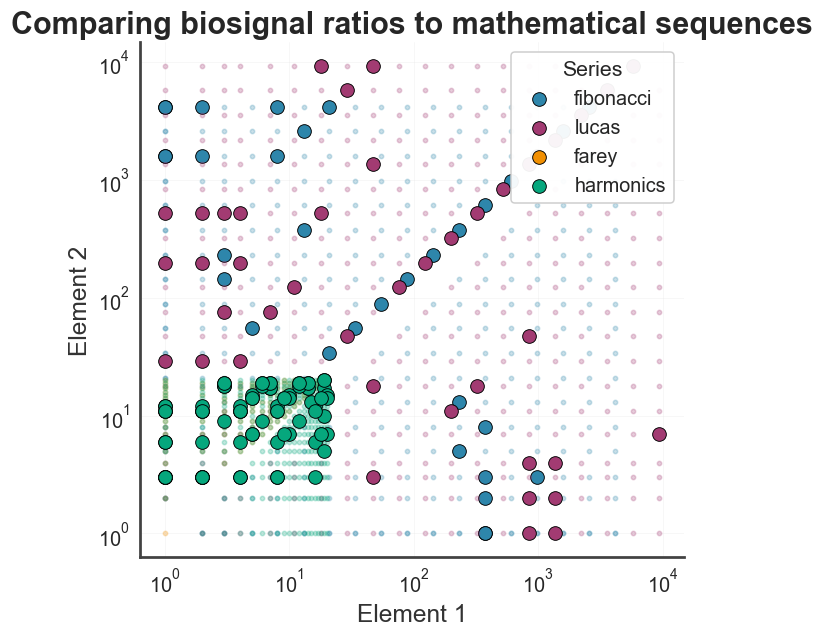
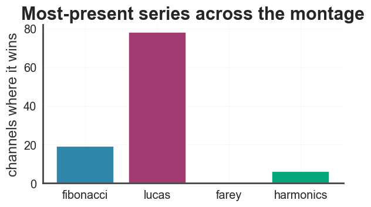
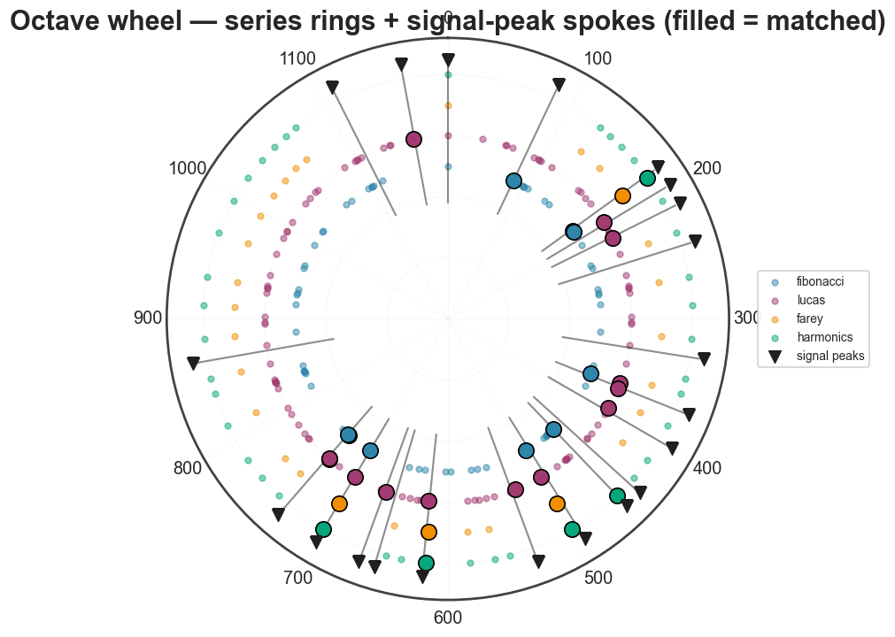
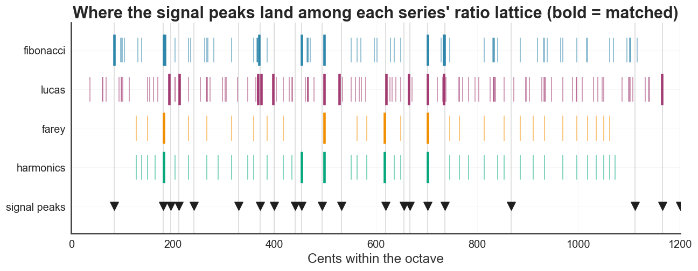
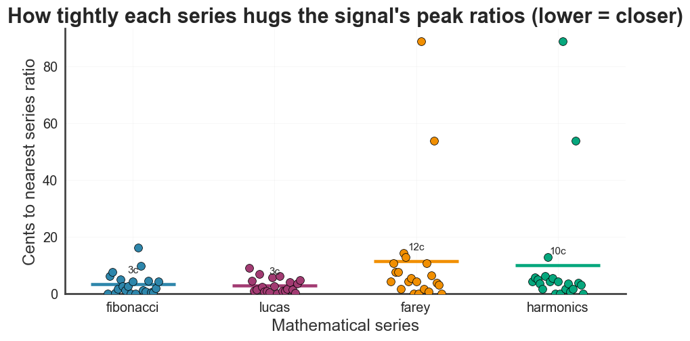
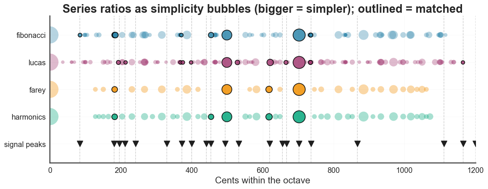
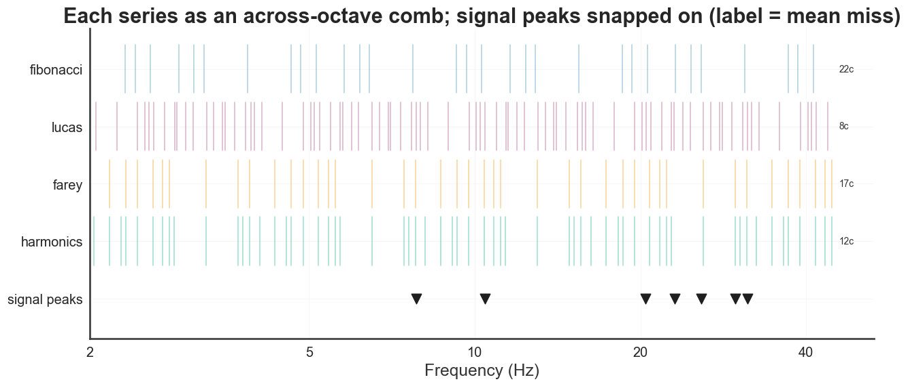
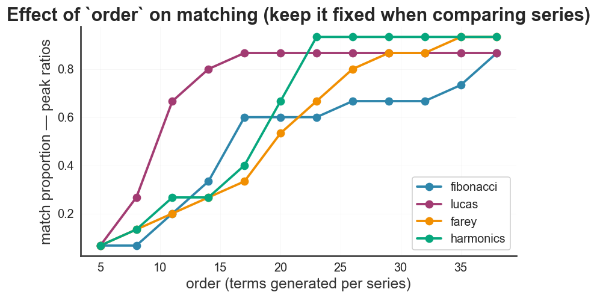

Matching biosignals to mathematical series#
biotuner.math_series asks a simple question: which classic mathematical
sequence — Fibonacci, Lucas, harmonics, Farey, … — is most present in a
biosignal’s peak-ratio structure? It takes a fitted compute_biotuner
object (or a HarmonicInput), compares its peak ratios (or extended-peak
ratios) against the ratios generated by each series, and reports the match
proportions. The matched subset of the winning series can then be turned into
a scale or a consonance-selected mode.
This notebook walks through the full workflow on a real EEG recording.
1. Extract peaks and ratios from the EEG#
We load an example recording (104 channels × 4000 samples @ 1000 Hz), pick one
channel, and extract its spectral peaks and the harmonically extended
peaks. Both yield octave-reduced peak ratios in [1, 2) — the input the
matcher works on.
import numpy as np
import matplotlib.pyplot as plt
import warnings
warnings.filterwarnings("ignore")
from biotuner.biotuner_object import compute_biotuner
data = np.load("../data/EEG_example.npy") # (104 channels, 4000 samples)
sf = 1000
bt = compute_biotuner(sf=sf, peaks_function="FOOOF", precision=0.5)
bt.peaks_extraction(data[0], min_freq=2, max_freq=40, n_peaks=6)
bt.peaks_extension(n_harm=5)
print("peaks (Hz): ", np.round(bt.peaks, 2))
print("peak ratios: ", [round(r, 3) for r in bt.peaks_ratios])
print("n extended ratios: ", len(bt.extended_peaks_ratios))
peaks (Hz): [10.42 20.41 25.76 23.05 29.7 7.82]
peak ratios: [1.106, 1.118, 1.129, 1.153, 1.236, 1.262, 1.289, 1.305, 1.332, 1.425, 1.455, 1.474, 1.647, 1.899, 1.959]
n extended ratios: 21
2. Which mathematical series is present?#
Feed the fitted object to math_series. analyze() scores every series; the
summary() table ranks them by the proportion of the EEG’s peak ratios each
one reproduces.
from biotuner.math_series import math_series
ms = math_series(bt, ratios_source="peaks_ratios", maxdenom=24).analyze()
print("Best-matching series:", ms.best_series, "\n")
print(ms.summary())
Best-matching series: lucas
series proportion ... n_target n_series_ratios
0 lucas 0.866667 ... 15 120
1 harmonics 0.666667 ... 15 83
2 fibonacci 0.600000 ... 15 87
3 farey 0.533333 ... 15 64
[4 rows x 6 columns]
ms.plot_proportions();

Peaks vs. extended peaks#
ratios_source switches between the raw spectral peak ratios and the
harmonically extended ones — they can favour different series.
ms_ext = math_series(bt, ratios_source="extended_peaks_ratios", maxdenom=24).analyze()
print("peaks -> best:", ms.best_series)
print("extended -> best:", ms_ext.best_series)
ms_ext.plot_proportions();
peaks -> best: lucas
extended -> best: lucas

Where do the peaks sit? — the ratio-pairs scatter#
Each small dot is a pair of series elements; the large dots are the pairs whose ratio matches one of the EEG’s peak ratios.
ms.plot_ratio_pairs();

3. Across the whole montage#
Running the matcher on every channel answers the population question: which series dominates this recording’s peak-ratio structure?
best_counts = {s: 0 for s in ms.series_names}
for ch in range(data.shape[0]):
try:
bt_ch = compute_biotuner(sf=sf, peaks_function="FOOOF", precision=0.5)
bt_ch.peaks_extraction(data[ch], min_freq=2, max_freq=40, n_peaks=6)
m = math_series(bt_ch, ratios_source="peaks_ratios", maxdenom=24).analyze()
best_counts[m.best_series] += 1
except Exception:
continue
print("Best series per channel:", best_counts)
from biotuner.plot_config import set_biotuner_style, get_color_palette
set_biotuner_style()
plt.figure(figsize=(6, 3.2))
plt.bar(list(best_counts), list(best_counts.values()),
color=get_color_palette("biotuner_gradient", len(best_counts)))
plt.ylabel("channels where it wins")
plt.title("Most-present series across the montage");
Best series per channel: {'fibonacci': 19, 'lucas': 78, 'farey': 0, 'harmonics': 6}

4. Derive musical structures#
The matched subset of the winning series is a scale; series_mode reduces it
to a consonance-selected mode.
print("Scale from best series:", [round(x, 3) for x in ms.series_scale()])
print("7-note mode (pairwise):", [round(x, 3) for x in ms.series_mode(n_steps=7, method="pairwise")])
print("Scale in cents: ", [round(c, 1) for c in ms.scale_cents()])
Scale from best series: [1.0, 1.103, 1.103, 1.106, 1.118, 1.121, 1.131, 1.234, 1.236, 1.236, 1.236, 1.236, 1.236, 1.236, 1.236, 1.236, 1.263, 1.285, 1.286, 1.286, 1.287, 1.304, 1.306, 1.332, 1.333, 1.431, 1.455, 1.474, 1.474, 1.646, 1.958, 1.965, 1.972]
7-note mode (pairwise): [1.236, 1.236, 1.236, 1.286, 1.287, 1.474, 1.474]
Scale in cents: [0.0, 169.2, 170.4, 173.7, 193.2, 197.8, 212.6, 364.1, 366.5, 366.8, 366.9, 366.9, 366.9, 366.9, 366.9, 367.1, 404.4, 434.0, 435.1, 436.1, 436.8, 459.9, 461.6, 496.4, 498.0, 620.3, 648.7, 671.3, 671.8, 863.3, 1163.6, 1169.8, 1175.2]
5. Creative views — where the (extended) peaks sit among the series#
These are built-in math_series methods. We build a matcher on the
extended-peak ratios and call each visualization. order= thins the
lattice for legibility without changing the matching settings.
ms_ext = math_series(bt, ratios_source="extended_peaks_ratios", maxdenom=24).analyze()
print("best (extended):", ms_ext.best_series)
ms_ext.plot_octave_wheel(order=13);
best (extended): lucas

Cents ruler — the ratio lattice#
Each series as a lane of ratio-ticks on a 0–1200 cents axis (bold = matched); guide lines drop from each signal peak.
ms_ext.plot_cents_ruler(order=13);

How tightly each series fits#
For every extended peak, the cents distance to the nearest ratio of each series (lower = closer). A density-aware view — note Farey is dense yet does not fit tightest, so this is not just a density effect.
ms_ext.plot_fit_landscape();

Simplicity bubbles#
Each series ratio as a bubble sized by simplicity (bigger = simpler fraction). Do the signal peaks land on the simple rungs? Outlined bubbles are matched.
ms_ext.plot_simplicity_bubbles(order=13);

Across-octave frequency comb (the series as canvas)#
Flip it around: each series, tiled across octaves and scaled to best fit the signal, becomes a frequency grid; the signal peaks (Hz) snap onto the nearest step, with each lane’s mean miss in cents.
ms_ext.plot_series_comb(order=7);

6. Effect of order on matching#
order sets how many terms each series generates — more terms means a denser
ratio set, which trivially matches more peaks. So the absolute proportions rise
with order and then saturate. The practical lesson: keep order fixed when
comparing series — only proportions computed at the same order (and
maxdenom) are comparable. The ranking is usually far more stable than the
absolute values.
from biotuner.plot_config import get_color_palette
orders = list(range(5, 41, 3))
series = ms.series_names
colors = dict(zip(series, get_color_palette("biotuner_gradient", len(series))))
fig, ax = plt.subplots(figsize=(8.5, 4.5))
for name in series:
props = [math_series(bt, ratios_source="peaks_ratios", order=o, maxdenom=24)
.analyze().series_scores[name]["proportion"] for o in orders]
ax.plot(orders, props, "-o", color=colors[name], label=name)
ax.set_xlabel("order (terms generated per series)")
ax.set_ylabel("match proportion — peak ratios")
ax.set_title("Effect of `order` on matching (keep it fixed when comparing series)")
ax.legend();

7. Parameters to control#
Parameter |
Default |
Controls |
|---|---|---|
|
|
Which EEG ratios to analyse: raw peaks vs |
|
|
Matching strictness. Ratios match if their |
|
|
Which series to compare (also available: |
|
|
Terms generated per series (Farey order for |
|
|
Period the ratios fold into. |
series_mode() adds n_steps, method ("subset" exhaustive vs "pairwise" greedy) and function (consonance metric).
Rule of thumb: the two dials you’ll actually turn are ratios_source
(peaks vs extended) and maxdenom (how forgiving the match is). Keep order
and maxdenom fixed across signals when comparing series — proportions are
only comparable under the same settings.
All of these visualizations are methods on math_series — plot_proportions,
plot_ratio_pairs, plot_octave_wheel, plot_cents_ruler,
plot_fit_landscape, plot_simplicity_bubbles, and plot_series_comb — so you
can call them on any biotuner object. See the biotuner.math_series API page
for the full reference.